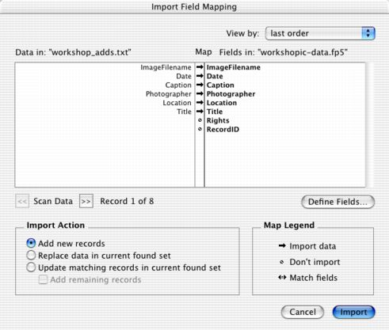

Image Class Instructor: John Weise
If you have questions, please address them to dlxs-info@umich.edu.
This portion of the DLXS Workshop focuses on implementing a collection in the Image Class. It is organized as a hands-on lesson, with the entire process outlined in detail. All of the steps are included so that it can be repeated or used as a guide later. Links to the detailed Image Class documentation are included. Check out the database of UM Campus Photos that we'll be working with in the workshop.
A printed copy of this document will be available at the workshop.
Workshop Day 4 – Thursday Morning
Workshop Day 4- Thursday Afternoon
In the Image Class Content Prep portion of the workshop we work with some new images and descriptive data, adding them to an existing image database. We will generate MrSID images and put them in place on the server.
In this workshop we are working with a collection that already exists. However if it were a new collection it would be necessary to choose a collection identifier for it, and to enable web access to the collid. When choosing a collid, it helps to keep it short and to keep in mind that it should be unique, not just within Image Class, but across all of the classes. Consider including a consistent class specific ending on each collid to help avoid conflicts. For example, workshopic is the collid for the collection that will be used in this lesson.
Managing access to collections will be covered elsewhere in the workshop, since it applies to all DLXS Classes.
Images, in general need to be converted to a format suitable to use on the web. Image Class supports a couple of special formats that allow for enhanced functionality (zzooming), MrSID and JPEG2000. Image Class provides tools for generating JPEG2000 files, but does not provide tools for managing the workflow of converting master image files to web-suited formats.
$DLXSROOT/bin/i/image/imageprep workshopic
In this part, descriptive info for the new images will be added to the database. FileMaker Pro will be used to edit the database. FileMaker Pro is a useful tool for preparing data for Image Class, though other tools can be used instead.
Each participant will do this work on their own machine.
A good convention for naming collection database files is collid-data.fp5 (e.g. workshopic-data.fp5).
Import the descriptive data for the new images in to the existing database. New records will be created for each. The database is setup to create record ID numbers and some other information automatically.

This is where you specify, for the purposes of transformation to SGML for Image Class, which fields hold the record ID, image filename, and caption. Additionally, mappings from the collection specific fields to the common (i.e., cross collection searching) fields are layed out.
Open the configuration file (workshopic-config.fp5), which is just an empty copy of the database, with all fields defined as text (no calculations or auto entries, etc.).
Create four records as follows:
As silly as it sounds, put the name of the field in each field of the first record. Sometimes it is useful to alter the field name slightly for better presentation online.
The second record must have an abbreviated name for each field. Each needs to be unique, and they are case sensitive (see example), but other than that, they can be whatever you want.
Note, abbreviation for Image Filename below is WORKSHOPIC.fi, which looks a lot like the abbreviation for Title which is WORKSHOPIC.ti.
The third record must have cross collection search field abbreviations.
The fourth record is for specifying which fields hold record IDs (IC.id), image filenames (IC.fn), and captions (IC.vi) .
The descriptive data records and the configuration data records must be exported from the database in to HTML tables within HTML files. FileMaker Pro provides this function. In an upcoming step, the HTML tables will be read by a Perl script which generates SGML as output.
First, for the descriptive data file...
Do the same for the configuration file, naming it workshopic-config.htm
The tools for transforming the data to SGML are setup for use on the unix machine called jolt.umdl.umich.edu.
Transfer the the workshopic-data.htm and workshop-config.htm files to the directory $DLXSROOT/prep/w/workshopic.
The collection info file is a one line text file. The data in the info file affects how the SGML is generated. The file must be stored on jolt.umdl.umich.edu in $DLXSROOT/prep/w/workshop as workshopic-info.txt. Use a text editor (e.g., vi, xemacs) to create the file.
cd $DLXSROOT/prep/w/workshopicxemacs workshopic-info.txt
CTRL-X CTRL-C to quit (you will be prompted to save)
Here is a real example of what the 1 line of a collection info file might can look like:
UM Campus Area Photos#John Weise and Contributors#WORLD#both
It is not important yet to understand the purpose of each of the fields, but basically they mean the following:
Collection Title#Publisher#Global Setting for Record Level Authentication#Searchable Structures
At this point you must have :
still on jolt.umdl.umich.edu...
cd $DLXSROOT/prep/w/workshopic
The report should be similar to the following, though with more images, etc.
$DLXSROOT/bin/i/image/idb transform workshopic
This report saved as: $DLXSROOT/prep/w/workshopic/workshopic-report.txt
Total Images Found: 36 and Not Found: 0
Total Entries: 36
Total Items: 36
Total Entries Dropped Due To Missing ID: 0
Total Entries Dropped Due To Duplicate ID: 0
Misc Errors/Warnings:
NOTE: No character conversion file found.
Illegal characters will be converted to "?" and reported in $DLXSROOT/prep/w/workshopic/workshopic-charreport.txt.
ic.workshop.unnorm.sgm has been created. Use less or more to look at it.
less ic.workshop.unnorm.sgm
Some things to check for to confirm that the transformation worked...
<BASE NAME="WORKSHOPIC.ri">Rights</BASE>
<ENTRY ENTRYID="x-2" COLLID="MCworkshopic" CA="workshopic">
<I IENTRYID="workshopic-x-2-1" IENTRYID="WORKSHOPIC-X-2]P2060001.TIF" IENTRYIDV="workshopic-x-2-1" IID="1" IT="1">
<ISTRUCT ISENTRYID="s-workshopic-x-2]P2060001.TIF" ISENTRYIDV="s-workshopic-x-2-1" STID="0" FACE="UNSPEC" STTY="SUM
M" X="1" Y="1" MT="IMAGE:::DYNAMIC" ME="SID" MO="TIF" MS="P" M="P2060001">West side of building with tree</I
STRUCT>
<C CN="WORKSHOPIC.ti" CM="DC.ti DC.su DLXS.ma">William L. Clements Li
brary</C>
This step checks the SGML against the Image Class DTD to validate the SGML. It also normalizes the SGML, which, if necessary, adjusts the SGML tagging so that it is consistent in terms of case and order of element attributes. Finally, all line-breaks are removed so that the SGML is all on one line.
$DLXSROOT/bin/i/image/idb norm workshopic
There are not likely to be any errors with the workshopic data, but tell the instructor if there are.
This process creates ic.workshop.norm.sgm. This is the file that will be used to build an XPAT index.
In this section the workshopic SGML will be indexed with the XPAT search engine, preparing it for use with the DLXS middleware.
Two directories are needed to build the XPAT index. A simple unix shell script has been created that does the work of setting the directories up for a specific collection. The script usage is $DLXSROOT/bin/i/image/setupcollindex w/workshopic and it creates the following...
To execute setupcollindex...
$DLXSROOT/bin/i/image/setupcollindex w/workshopicusing /DLXSROOT. setting up /DLXSROOT/idx up for w/workshopic done. setting up /DLXSROOT/obj up for w/workshopic done.
Everything is now setup to build the XPAT index. The makefile in the idx directory contains the commands necessary to build the index, and can be executed easily.
cd $DLXSROOT/idx/w/workshopic make allecho "working..."
rm -f ./image.ffc
rm -f ./image.ffi
rm -f ./image.ffw
rm -f ./image.idx
rm -f ./image.maps.*
rm -f ./image.mfs
rm -f ./image*.rgn
rm -f ./image.str
rm -f ./image.dd
rm -f ../../../obj/w/workshopic/image.sgm
cat ../../../obj/w/workshopic/ic.*.norm.sgm > ../../../obj/w/workshopic/image.sgm
cp ./image.blank.dd ./image.dd
xpatbld -D ./image.dd
multirgn -f -D ./image.dd -t ./tags.txt
When creating a new collection, it is generally necessary to create a record in the Collection Database using Collmgr before trying the collection with a browser. In this case a record already exists, so you can give it a try. Do you see the newly added images?
http://yourworkshopid.ws.umdl.umich.edu/cgi/i/image/image-idx?c=workshopic
Version 11 of Image Class introduced support of MySQL in addition to XPAT for indexing/searching of descriptive data records. Tools for loading data records directly to MySQL are under development. In the meantime, a script is provided for converting Image Class SGML to SQL statements for easy loading to MySQL.
The steps for conversion and actual loading are as follows...
$DLXSROOT/bin/i/image/icsgml2icmysql.pl workshopic
The prep directory should now have two sql files, ic.workshopic_data.sql and ic.workshopic_media.sql which can be loaded directly to MySQL.
Each workshop participant has a designated workshop database in MySQL. The database names are based on your workshop user id, with "_ws" appended.
cd $DLXSROOT/prep/w/workshopic
mysql -u theadminuserid -h dev.mysql.umdl.umich.edu -p yourworkshopid_ws < ic.workshopic_data.sql
mysql -u theadminuserid -h dev.mysql.umdl.umich.edu -p yourworkshopid_ws < ic.workshopic_media.sql
You now have two new tables in the mysql database, workshopic and workshopic_media. The following commands can be used to login to MySQL and confirm that the tables loaded.
mysql -u theadminuserid -h dev.mysql.umdl.umich.edu -p yourworkshopid_ws show tables; describe workshopic; select count(*) from workshopic; select * from workshopic; describe workshopic_media; select count(*) from workshopic_media; select * from workshopic_media;
If you need to repeat these steps for any reason, it will be necessary to drop the workshopic and workshopic_media tables from MySQL first. A small array of basic MySQL commands, including the drop command, are covered in Image Class Data Loading: MySQL.
Simply loading the data to MySQL is not enough to cause Image Class to actually use them. Image Class will continue to use the XPAT index until configuration changes are made using Collmgr.
These are the final steps in deploying an Image Class collection online. Here the Collection Manager will be used to review the Collection Database entry for workshopic. The Collection Manager will also be used to check the Group Database. Then it can be tried through a web browser.
Each collection has a record in the collection database that holds collection specific configurations for the middleware. CollMgr (Collection Manager) is a web based interface to the collection database that provides functionality for editing each collection's record. Collections can be checked-out for editing, checked-in for testing, and released to production. A collection database record for workshopic has already been created. In general, a new collection needs to have a CollMgr record created from scratch before the middleware can be used. Take a look at the record to become familiar with it.
http://yourworkshopid.ws.umdl.umich.edu/cgi/c/collmgr/collmgr
To make Image Class use MySQL instead of XPat for search and retrieval of images, set these Collection Database fields for the workshopic collection using Collmgr as follows...
| collmgr field | value |
|---|---|
| appmodule | ImageApp/mysqlImageApp |
| querylanguage | sql |
| data_table | workshopic |
| media_table | workshopic_media |
| field_admin_maps | ic_id:::ic_id |
Try it...
http://yourworkshopid.ws.umdl.umich.edu/cgi/i/image/image-idx?c=workshopic
There shouldn't be any real obvious differences. To confirm that MySQL is in use by the middleware, add to the url for the results page... debug=querystring . This will show you the query, which should begin with select and look something like...
select workshopic_media.m_id,workshopic_media.m_iid
from workshopic left join workshopic_media
on workshopic.ic_id = workshopic_media.m_id
where (match (workshopic_all) against ('+workshopic' in boolean mode) )
and workshopic_media.istruct_ms="p" and workshopic_media.m_searchable = '1' ;
Another function of CollMgr allows the grouping of collections for cross-collection searching. Any number of collection groups may be created for Image Class. Groups are created and modified using CollMgr. For this workshop, the group "samplegroupic" record has already been edited to include the workshopic collection. Take a look at the record to become familiar with it.
http://yourworkshopid.ws.umdl.umich.edu/cgi/c/collmgr/collmgr-idx
Each collection may have a web directory with custom Cascading Style Sheets, interface templates, graphics, and javascript. The default is for a collection to use the web directory for the class, which is at $DLXSROOT/web/i/image. Optionally, a collection specific web directory may be created. There is one more purpose of the web directory, which is to allow quick and easy loading of thumbnails as documents rather than retrieving thumbnails through slower CGI calls. Enable quick retrieval of thumbnails by creating a collection specific web directory and a symlink to the thumbnails.
These steps have already been done for the workshop.
mkdir -p $DLXSROOT/web/w/workshopiccd $DLXSROOT/web/w/workshopicln -s $DLXSROOT/img/w/workshopic/index thumb
http://yourworkshopid.ws.umdl.umich.edu/cgi/i/image/image-idx?c=workshopic
Assuming we are on schedule, we will spend this part of the workshop looking at how to customize Image Class collections using the Collection Manager, Cascading Style Sheets, Templates, etc.
Some topics are beyond what we can cover fully in the workshop. Below are links to documentation on some of those topics, as well as to the complete set of Image Class documentation.